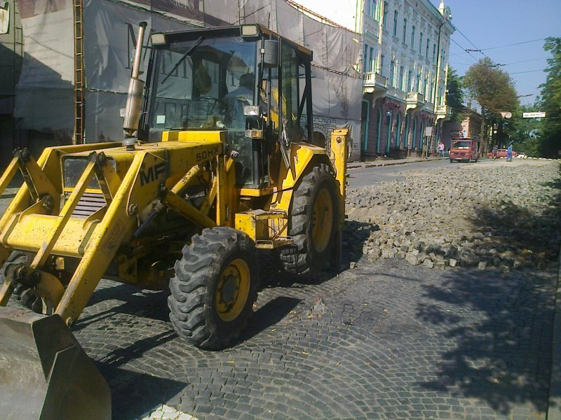
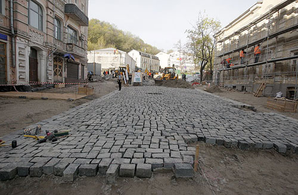

|
Укладка тротуарной плитки, укладка брусчатки.
Черновцы - настоящая "жемчужина" Буковинского края. Город с невероятно-изысканной архитектурой, старательно сохраненной украинской самобытностью и насыщенной культурной жизнью. Уютные улочки
старого города искренне принимают гостей, раскрывая красоту разных эпох и рассказывая свою историю. К позапрошлому веку черновицкие дороги не имели покрытия и канализации.
В дождливую погоду пути становились непроходимыми, и жители города постоянно страдали от этого. Впоследствии улицы начали засыпать гравием, но это неспасало от вышеупомянутых катаклизмов.
И вот в 1825 году городская власть приняла решение – мощение брусчатки. И так постепенно рождались история старых мощеных улиц и площадок в Черновцах.

Какую брусчатку выбрать для мощения тротуарных дорожек? Какой прочности и плотности? Что собой представляет правильная укладка тротуарной плитки (брусчатки)? Какая технология мощения тротуарной плитки? Ответ на все эти вопросы предоставляем ниже, в статье "Укладка тротуарной плитки Черновцы. Мощение брусчатки в Черновцах. Технология и виды тротуарной плитки". Следовательно, укладка тротуарной плитки (брусчатки) –процесс хлопотливый и очень ответственный, поэтому нестоет экспериментировать, а сразу довериться профессионалам. Деятельность нашей компании это благоустройство в Черновцах, а именно ландшафтный дизайн и укладка тротуарной плитки. Мы сделаем все виды благоустройства качественно и по доступным ценам для того, чтобы ваш двор стал действительно неповторимым. Наши специалисты также помогут в выборе узора и схем дизайна, чтобы тротуарные дорожки гармонично вписывались в придомовую территорию.
В первую очередь заказчику нужно выбрать форму, цвет и фактуру тротуарной плитки.
Этап 1. Подготовка проекта :
- размеры участка мощения тротуарной плиткой;
- определение нагрузки на поверхность территории;
- условия водоотвода, система дренажа;
- тип тротуарной плитки, размер, количество, тип монтажа.
Реализацию проекта следует начать с подготовительных работ, во время которых определяются уровни и разбивка территории.
Этап 2. Подготовка территории.
Перед тем, как осуществлять мощение тротуарной плитки нужно снять верхний слой почвы. Глубина выкапывания определяется в зависимости от толщины брусчатки и основы под нее, как правило, в пределах 25-65 см. Если почва на дне котлована нестабильна землю следует дополнительно уплотнить.
При выкапывании котлована очень важно определить уровень грунтовых вод. Если он находится выше уровня укладки тротуарной плитки, необходимо его снизить, сделав дренажные работы.
Этап 3. Профилизация территории.
На этом этапе нужно соединить конфигурации поверхности (повороты, перекрестки) с соблюдением уровня. При этом следует
учитывать естественные особенности объекта, его ландшафт.
Наклон поверхности проектируется в зависимости от условий водоотвода. Грунтовое покрытие выравнивают, используя слой крупнозернистого песка толщиной до 10 см. После этого
проводят виброуплотнение дна котлована (трамбовка).
Этап 4. Установка бордюров, поребриков.
Поверхность предела котлована фиксируется с помощью бордюров или поребриков, между которыми будет тротуарная плитка. Эти бетонные изделия устанавливаются на основу из полусухого бетона.
Этап 5. Создание основы.
Залогом правильного мощения тротуарной плитки (брусчатки) является создание надежной основы. Материалом для основы служит гравий или колотый щебень фракции 5-40 мм, который укладывается слоями толщиной по 10-15 см. Каждый из них тщательным образом уплотняется.
Для верхнего слоя основы стоит использовать материал фракции промежуточного значения между зернистостью подсыпки и основы. Это позволит предотвратить смешивание подсыпки с нижними слоями основы в процессе эксплуатации и, вследствие этого, проседания тротуарной плитки и движения швов. Толщина основы зависит, прежде всего, от назначения поверхностии плановых нагрузок. Для мощения территорий, тротуаров, дорожек
или площадок достаточно 20 см основы, а поверхности, рассчитанные на постоянное движение автотранспорта, требуют основы толщиной не менее 30-45 см.
Этап 6. Подготовка подсыпки.
Над основой должен находиться монтажный слой подсыпки. Подсыпкой служит щебенный отсев фракции 0-4 мм или просеянный песок фракции 0-7 мм.
Независимо от эксплуатационных нагрузок и типа брусчатки, толщина подсыпки после уплотнения должна составлять от 3 до 5 см. Подсыпку следует уровнять таким образом, чтобы уложенная на нее брусчатка (тротуарная плитка)
находилась приблизительно на 1 см выше от запланированного уровня.
Такие действия дают возможность путем трамбовки уровнять незначительную допустимую разницу высот отдельных плиток. Окончательное уплотнение подсыпки выполняется лишь после укладки тротуарной плитки с помощью вибрационной плиты с резиновой накладкой.
Этап 7. Укладка тротуарной плитки. Мощение брусчатки.
Чтобы не повредить подготовленную подсыпку, укладка тротуарной плитки начинается от установленных бордюров или поребриков. Для укладки следующих рядов можно использовать в качестве опоры только что замощенную поверхность. Направление движения – от краев территории к центру. Укладка каждого ряда плиток следует контролировать с помощью шнура.

Этап 8. Засыпка швов.
По завершению укладки тротуарной плитки происходит заполнение швов. Рекомендуем использовать сухой белый песок (без примесей) фракции 0-2 мм.
Крупнозернисийтый песок может застрягивать и неравномернозаполнять швы, а наличие примесей (например, глины) -вызывать появление пятен на поверхности тротуарной плитки.
Этап 9. Уплотнение поверхности (трамбовка).
Этот процесс осуществляют по сухой и чистой брусчатке с помощью вибрационной машины, используя резиновую накладку, функции которой заключаются в амортизации и защите плитки. Виброуплотнения участка проводят равномерно от краев к центру вплоть до достижения планового уровня поверхности и стабильности бетонных элементов.
Совет.
Для тротуаров, дорожек, площадок и других пешеходных зон швы должны представлять не менее 2-3 мм, а для дорог и участков, предназначенных для движения транспорта - 3-5 мм.
Если сделать укладку тротуарной плитки слишком тесно, белый песок для заполнения швов не будет выполнять своих функций. Вследствие этого под действием нагрузок и погодных условий тротуарная плитка может разрушаться, образовывая трещины и потертость на гранях и углах бетонных элементов. Таким образом, неправильное засыпание швов является одной из самых распространенных причин неправильной укладки и безосновательных жалоб на качество брусчатки. Если Вы хотите узнать, что лучше тротуарная плитка или брусчатка, если Вам трудно определиться, как именно Вы хотите сделать укладку тротуарной плитки, мы можем продемонстрировать готовые решения на реальных объектах, осуществить намерения и предыдущие расчеты. Возможно, это поможет выбрать тот или иной вариант, который Вам по нраву.
Профессиональная укладка тротуарной плитки в Черновцах и в Черновицкой области – это мы Ландшафтная Компания ”Зеленько”. Это мы, а именно наши специалисты с удовольствием выполним качественный ландшафтный дизайн в Черновцах.
Обращайтесь, г. Черновцы, ул. Фастовская 30 "Б" +38050-912-68-41, +38097-016-56-46
|